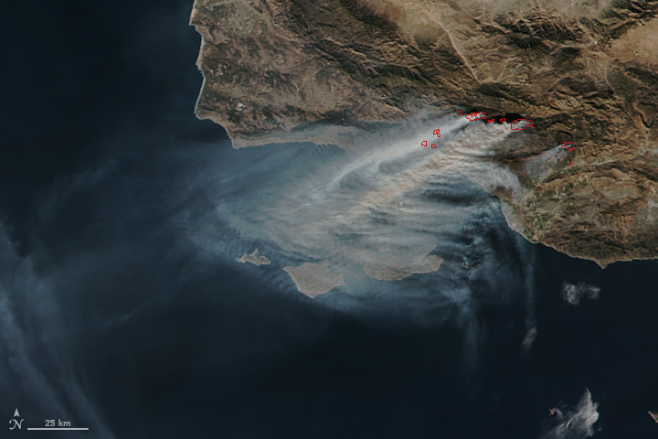
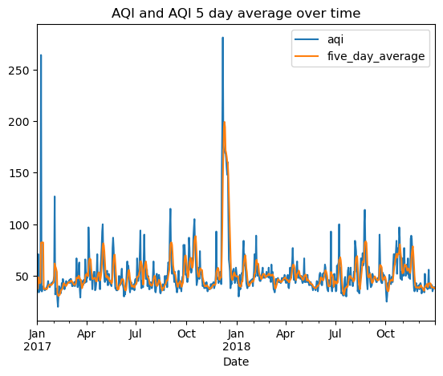
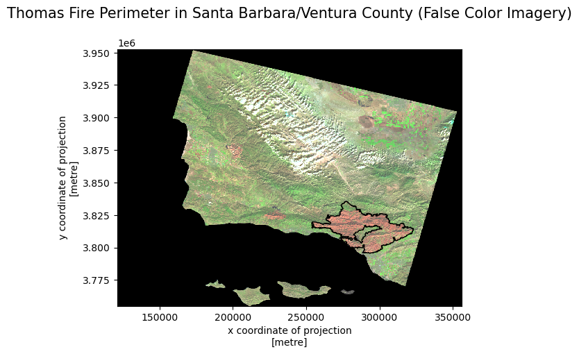

Code
import pandas as pd
import os
import rioxarray as rioxr
import geopandas as gpd
import matplotlib.pyplot as pltDecember 13, 2023

In December 2017, the Thomas Fire spread across Santa Barbara and Ventura counties until January 2018. This fire spread over 281,893 acres, and caused large amounts of damage in these areas. of The following analysis looks at the burn scars of the Thomas fire with false color imagery as well as the Air Quality Index over time; including the time period of the Thomas fire in December 2017. The datasets used in this analysis include: air quality data from the US Environmental Protection Agency, Landsat satellite data, and California fire perimeter data.
California Fire Perimeter - A shapefile of fire perimeters in California during 2017. The complete file can be accessed in the CA state geoportal.
Air Quality Index - Air Quality Index data from the US Environmental Protection Agency.
Landsat Satellite Data - A simplified collection of bands (red, green, blue, near-infrared and shortwave infrared) from the Landsat Collection 2 Level-2 atmosperically corrected surface reflectance data, collected by the Landsat 8 satellite. The data was accessed and pre-processed in the Microsoft Planetary Computer to remove data outside land and coarsen the spatial resolution (Landsat Collection in MPC). Data should be used for visualization purposes only.
Import Libraries
Import Datasets
# read in data for 2017 daily AQI by county
aqi_17 = pd.read_csv('https://aqs.epa.gov/aqsweb/airdata/daily_aqi_by_county_2017.zip')
# read data for 2018 Daily AQI by county
aqi_18 = pd.read_csv('https://aqs.epa.gov/aqsweb/airdata/daily_aqi_by_county_2018.zip')
# import landsat file
landsat1 = os.path.join(os.getcwd(),'data','landsat8-2018-01-26-sb-simplified.nc')
landsat = rioxr.open_rasterio(landsat1)
# import fire perimiters dataset
cal_fire = gpd.read_file('data/California_Fire_Perimeters_2017')The first step of this analysis was to read in the data. Air quality index datasets (by county) for 2017 and 2018 were read in from .zip files accessed through the US EPA. I used rioxarray.open_rasterio() to read in the landsat satellite data and geopandas.read_file() to read in the California fire perimeters data.
Then the datasets needed to be cleaned to prepare for visualization:
Prepare AQI Data
# preparing aqi data
# glue dataframes together
aqi = pd.concat([aqi_17, aqi_18])
# re-assign the column names - .str.lower() makes them lower case
aqi.columns = aqi.columns.str.lower()
# re-assign the column names again - .str.replace(' ','_') replaces the space for _
aqi.columns = aqi.columns.str.replace(' ','_')
# select data only from Santa Barbara County
aqi_sb = aqi[ aqi['county_name'] == 'Santa Barbara']
# remove state name, county name, state code, and county_code columns
aqi_sb = aqi_sb.drop(columns = ['state_name', 'county_name', 'state_code', 'county_code'])
# 1. update date column of aqi_sb to be datetime object
aqi_sb['date'] = pd.to_datetime(aqi_sb['date'])
# 2. update the index of aqi_sb to be the date column
aqi_sb.set_index('date', inplace = True)
# 5 day rolling window calculation
aqi_sb.aqi.rolling('5D').mean()
# add five_day_average to aqi_sb dataframe
aqi_sb['five_day_average'] = aqi_sb.aqi.rolling('5D').mean()The 2017 and 2018 AQI datasets were read in as two separate objects, so the first step was to combine both of the datasets. Additionally, the column names were not in lower snake case, so, to streamline any next steps, I reassigned column names to lower snake case. We are only analyzing Santa Barbara county to understand the impacts of the Thomas Fire, so it was important to filter for data only in Santa Barbara county. Because we are only looking at one county, the state name, county name, state code, and county codes were unecessary, so they were dropped. The last steps to take were to convert the date column to be a datetime object and to calculate the five day rolling averages.
Prepare Landsat & California Fire Perimeter Data
The preparation for the Landsat and California fire perimeter data was much quicker. The Landsat satellite data had an extra dimension, so I dropped the ‘band’ dimension in order to make it 2D. I then converted the fire perimeter data to have the same CRS as the Landsat data and subsetted the perimeter data to include only the Thomas Fire perimeter.
Using the prepared data, I plotted the AQI over time, as well as a false color image of the Thomas Fire Perimeter.
Daily AQI and 5-day Average
The following graph shows the daily air quality index and five day average of air quality index over time. We can see that there is a large peak at the end of 2017, which is when the Thomas Fire first began. We can infer that the Thomas Fire caused in increase in air quality index during this time.

Thomas Fire Perimeter over False Color Image
The following plot shows the Thomas Fire perimeter, colored by false color imagery, and the Thomas Fire perimeter is bordered in black. The false color imagery shows a large burn scar in the area in which the Thomas fire occured.
# create thomas fire perimeter plot
# create axis
fig, ax = plt.subplots()
# plot thomas fire perimeter
thomas_fire.plot(ax = ax,
facecolor="none",
edgecolor = 'black')
# plot the false color image
landsat[['swir22', 'nir08', 'red']].to_array().plot.imshow(robust = True)
# set the title
ax.set_title('Thomas Fire Perimeter in Santa Barbara/Ventura County (False Color Imagery)',
fontsize = 15,
x=0.5, y=1.1) # move title up
# show plot
plt.show()
California Fire Perimeters (all). (n.d.). Retrieved November 29, 2023, from gis.data.ca.gov website: https://gis.data.ca.gov/datasets/CALFIRE-Forestry::california-fire-perimeters-all-1/about
Environmental Protection Agency. (n.d.). AirData website file download page. EPA. https://aqs.epa.gov/aqsweb/airdata/download_files.html#AQI
Microsoft Planetary Computer. Planetary Computer. (n.d.). https://planetarycomputer.microsoft.com/dataset/landsat-c2-l2
@online{hahn2023,
author = {Hahn, Hope},
title = {Thomas {Fire} {Air} and {Land} {Quality} {Consequences}},
date = {2023-12-13},
url = {https://h-hahn.github.io/blog/2023-12-13-thomas-fire},
langid = {en}
}